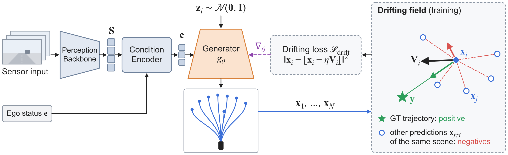

Summary
Drifting model 把扩散的”迭代”从推理搬到训练：生成器 一次前向就把噪声映射成样本，训练时用一个核场把生成样本拉向正样本、推离其他生成样本，收敛后 。DriftingPlanner 是这套框架在轨迹规划上的第一次适配，它必须解决两个规划特有的困难。第一，图像生成里有离散类别，同一类的多张图共享目标分布；规划里每个 scene 就是自己的条件，只有一个 GT 轨迹，所以场必须逐 scene 计算。第二，逐 scene 计算只剩一个正样本，吸引项把 条生成轨迹拉向同一点、互斥项把它们推开，结果它们停在一个以 GT 为球心的球壳上——推理时采样一次得到的是球壳上的一点而不是球心。作者用两个手段处理这个球壳：对单 query 解码器用 antithetic 推理，成对解码 与 再平均，可证明能精确消去生成器关于 的所有奇次项（包括决定球壳半径的线性项），且是生成分布均值的无偏估计；对多 proposal 解码器改用逐坐标 Laplace 核，让横向与航向误差的权重不再被纵向大误差压平。整个解码器只用 drifting loss 训练，没有任何 回归项。NAVSIM navtest 上 93.75 PDMS（DrivoR backbone + scorer，64 proposal 各出一对 antithetic 候选、共 128 条），同一 backbone 下纯解码器对比里单步 90.19 PDMS，与 flow matching 十步的 90.32 相差 0.13 点而延迟 6.49 ms vs 8.57 ms。
Problem & Motivation
- 坐标回归解码器（TransFuser、DrivoR 等）速度快，但 的最优解是每个坐标的中位数。当场景允许”保持车道”或”绕开障碍”两种都可行的机动时，中位数落在两者之间，而两条可行驶轨迹之间的插值不保证可行驶——DAC 与碰撞指标惩罚的正是这种情况。
- Diffusion / flow matching 建模的是分布而不是中位数，但代价在测试时：去噪要多步，驾驶方向最强的变体把 schedule 截断到 anchor 附近的 2 步；而且训练很少是纯生成式的， 辅助损失或学习到的 scorer 决定了大部分最终输出，因此报告的性能增益无法归因于生成目标本身。
- Drifting model 提供第三种选择：推理一次前向，训练时迭代。于是有一个直接问题——只用 drifting loss、不加任何坐标回归项，能否在单步推理下与回归解码器和迭代生成解码器竞争。
- 原版 drifting 不能直接用，因为它是为 class-conditional 图像生成设计的：场按 class label 分别计算，每个类有很多正样本。规划有两个差异（作者在 §1 明确列出）：
- 没有离散条件，每个 scene 由传感器输入与 ego 状态唯一确定，数据中没有任何其他样本共享它的目标分布。若把一个 mini-batch 的 scene 混在一起算场，会把 scene 的生成轨迹拉向无关 scene 的 GT、并推离 的生成轨迹。
- 逐 scene 计算后只剩一个正样本（驾驶数据集每个 scene 只记录一条 GT 轨迹），于是产生上述球壳问题。
Method
1. Drifting 的基本形式（§3.1）
- 生成器 把 映射到样本 ； 提供正样本， 提供负样本，核 定义漂移场：
- 第一项把 拉向正样本，第二项把它推离其他生成样本； 时两项抵消。训练目标是让生成器沿场走一小步后自我回归，stop-gradient 保证目标不反向传播：
- 与扩散的关键差异在部署形态：训练时分布被推着走，推理时仍只有一次前向。
2. 问题设定（§3.2）
- 输入 scene tokens （相机 + LiDAR）与 ego 状态 ，输出 个位姿 ，每项是当前 ego 坐标系下的位置（米）与航向（弧度）。
- 交叉注意力条件编码器把 映射为条件向量 ，生成器直接输出轨迹快照：
- GT 轨迹 只作为场中的正样本出现，不参与任何直接的 – 距离损失。
3. Scene-isolated drifting field（§3.3）
-
对 batch 内每个 scene 抽 个 latent、解码 条轨迹，核在形状 的张量上逐 scene 计算，不同 scene 的生成轨迹永不配对。这一步等价于原版的 per-class 计算，只是把 class label 换成 scene，并接受 。
-
特征尺度：用候选池（GT + 生成轨迹）上的平均距离（带下界 ）把向量归一化，，缩放量 detach 但轨迹本身保留梯度。
-
各向同性 核的问题：整条轨迹共用一个权重时，距离被误差最大的坐标主导，驾驶里通常是最后几个位姿的纵向位置。于是”离目标很远”的生成轨迹在看到几乎均匀的权重，横向与航向误差只得到很弱的平均化修正。
-
逐坐标 Laplace 核：每个坐标 有自己的 logit 矩阵和自己的权重，坐标先按 batch 内该坐标的标准差 归一化：
-
自斥项置 ；每个坐标只有本坐标的误差进入权重，纵向的大误差不再压平横向与航向的修正信号。
-
联合归一化：把吸引块与互斥块拼成一个矩阵一起归一化，使靠近目标的轨迹按比例获得更少的斥力（两个独立 softmax 无法表达这种耦合）：
- 交叉质量加权：联合归一化后两块总质量不等，因此各自按对方的行质量加权，使每一行的吸引质量与斥力质量相等：
- 相等之后，原始场只依赖相对位移，对整场景的平移不变；否则会多出 这一项，把轨迹往归一化空间原点推或拉，与目标位置无关。
-
数值：最锐温度下权重在单精度下会下溢，因此整个归一化与加权在 log 空间完成、逐 scene 减最大值，场用 float32 且关闭混合精度。
-
逐 scene 单位 RMS 与多温度求和：场按每个 scene 自己的 RMS 归一化，使不同 scene 的步长一致，再在多个温度上求和（锐核管最近的生成轨迹，宽核管整体布局）：
4. 球壳与 antithetic 推理（§3.4）
- 单一正样本下，吸引把所有生成轨迹拉向 ，互斥把它们推开，最终半径由两项平衡决定、而非由数据方差决定。规划器只能输出一条轨迹，单次采样得到的是球壳上的一点。
- 球壳是否顽固取决于生成器结构。若噪声分支以无仿射参数的 LayerNorm 结尾， 满足 且 ：噪声特征的模长不随 收缩，生成器只能靠后续层压制它，而互斥项每一步都在把它们推开。
- 对策是成对解码再平均，即 Monte Carlo 的 antithetic variates：
- 命题（§3.4，附证明）：设 且 ，则 (1) 单条生成轨迹偏离中心的 RMS 至少为 ；(2) antithetic 估计量不含任何奇次项，误差上界为 ，与 无关；(3) 它是生成分布均值的无偏估计。
- 换句话说，单条样本完整体现了决定球壳半径的线性项 ，而成对平均对任意 都能精确消去它以及所有更高阶奇次项，只留偶次曲率。 对固定噪声使推理确定；条件编码器只跑一次， 个输入作为一批送入生成器。
- 备选是直接生成器： 上的 SiLU MLP，无归一化层，第一层对 的权重可以收缩，因此 能在训练中变小、单条轨迹本身就会靠近中心；antithetic 仍然适用，只是消去剩余的部分。
5. 单 query 产生多个轨迹假设（§3.5）
- 解码器只有一个轨迹 query（每个 scene 一个 ），所有变化都来自 ；没有 anchor、mode embedding 或 mode 分类器。但多个 latent 解出的是一组不同的假设，而不是同一条轨迹的副本。
- 来源可以写成一行梯度恒等式——因为目标是 stop-gradient 副本，对生成轨迹的梯度就是场本身乘常数：
- 于是条件相近的 scene 的参数更新会叠加， 处的生成器近似被 上的平均场驱动，等效于一个多正样本集合：每条生成轨迹主要被离它近的正样本吸引，互斥项则把它们分开。回归解码器在同样数据上只会收敛到点估计（ 下是中位数、 下是条件均值）。
- 若 本身含有分离的机动，这套论证会把生成轨迹放到每一个机动上；但作者检查的场景里轨迹只在单一机动内部散开（曲率、速度剖面不同），没有跨机动的分组。
6. 多 proposal 解码器 + scorer（§3.5）
- 沿 DrivoR 的结构：一组学习到的轨迹 query 与 scene token 做注意力、在多个 decoder stage 里精炼，每个精炼后的 query 作为一个 proposal 的条件 ，drifting 生成器替换掉原来的回归头。
- 每个 proposal 用一个 antithetic 对解码，scorer head 预测每条候选的 NAVSIM 子分数并选 PDMS 最高者；64 个 proposal → 128 条候选，全部来自同一次 batched 解码。
7. 关键设置
| 项 | 设置 |
|---|---|
| 轨迹 | 8 个位姿 / 4 s，当前 ego 坐标系 |
| 训练时每 scene 生成数 | 16 |
| 温度集 | （基线）；（多数实验） |
| 漂移步长 | 0.1（基线）/ 0.2（单 query 实验） |
| 单 query 解码器训练 | DINOv2 ViT-S/14 + rank-32 LoRA，3 相机 224×336，48 个 register token（宽度 384），15 epochs |
| 多 proposal 解码器 | DrivoR backbone，64 proposal，每 proposal 一个 antithetic 对 |
| 核对比训练 | 从零训练 25 epochs，seed 42，仅 drifting loss |
| 消融用两个单模态 planner | Compact（，120 epochs）、Wide（，200 epochs），冻结 ImageNet ResNet-34 前视 token（16）+ LiDAR BEV token（16） |
| 训练目标 | 仅 ，无 / 回归项、无辅助损失 |
| Scorer 监督 | 训练时用 proxy PDMS（GPU 复现，与官方 scorer 的 Pearson 0.99、MAE 0.54 分） |
Pipeline

感知 backbone 与条件编码器把传感器输入和 ego 状态映射为条件 ；生成器 把 一次前向解码为轨迹 ， 个 latent 得到同一场景的 条轨迹。训练时（虚线框内）每条生成轨迹只有一个正样本（GT，绿色箭头）和 个同场景负样本（stop-gradient 的其他生成轨迹，红色箭头），两者合成漂移场 （黑色箭头），生成器回归到 。
- 编码：多相机 / LiDAR token 加 ego 状态经交叉注意力条件编码器得到 。
- 训练采样：每个 scene 抽 个 ，一次批前向得到 条轨迹（每条是把 8 个位姿的 拼成的 维向量）。
- 构场：正样本为该 scene 的 GT（），负样本为同 scene 其他生成轨迹的 stop-gradient 副本；逐坐标算 Laplace logit → 联合归一化 → 交叉质量加权 → 得到原始场。
- 归一化并求和：逐 scene 单位 RMS 归一化后，在多个温度上求和得到 。
- 更新：最小化 ；GT 只出现在场里，没有直接回归。
- 推理（单 query）：固定 对 antithetic 噪声，一批解码 条轨迹后平均，输出球心； 固定所以结果确定。
- 推理（多 proposal + scorer）：每个 proposal 解一对，128 条候选进入 scorer，选预测 PDMS 最高者。
- 执行：输出 8 个位姿 / 4 s 轨迹，由 LQR 控制器以 10 Hz 跟踪（NAVSIM 非反应式交通）。
Key Results
1) NAVSIM navtest 与已发表 planner 对比（Table 1）
| Method | 输入 | 解码器 | NC↑ | DAC↑ | TTC↑ | C↑ | EP↑ | PDMS↑ |
|---|---|---|---|---|---|---|---|---|
| UniAD | C | Regression | 97.80 | 91.90 | 92.90 | 100.00 | 78.80 | 83.40 |
| PARA-Drive | C | Regression | 97.90 | 92.40 | 93.00 | 99.80 | 79.30 | 84.00 |
| TransFuser | C&L | Regression | 97.70 | 92.80 | 92.80 | 100.00 | 79.20 | 84.00 |
| Hydra-MDP | C&L | Scoring | 98.30 | 96.00 | 94.60 | 100.00 | 78.70 | 86.50 |
| DiffusionDrive | C&L | Trunc. diffusion | 98.20 | 96.20 | 94.70 | 100.00 | 82.20 | 88.10 |
| DrivoR† | C | Regression + scorer | 98.80 | 98.95 | 96.20 | 100.00 | 90.56 | 93.68 |
| DriftingPlanner | C | Drifting + scorer | 98.78 | 98.94 | 96.21 | 100.00 | 90.67 | 93.75 |
- 与 DrivoR† 的差距是 0.07 PDMS，且 DrivoR 的行是作者用公开 checkpoint 重评的；这行对比说明的主要是同一个 scorer + backbone 的天花板，而不是 drifting 解码器本身的优势。解码器本身的证据在 Table 5（见下）。
2) 核设计（Table 2，同 backbone、同 seed，仅 drifting loss）
| 解码器 | NC | DAC | DDC | TTC | EP | PDMS |
|---|---|---|---|---|---|---|
| 各向同性 核 | 95.74 | 91.73 | 90.55 | 88.35 | 84.31 | 83.79 |
| 逐坐标 Laplace 核 | 98.06 | 96.92 | 96.97 | 93.57 | 89.39 | 90.90 |
- 提升 7.11 点，DDC +6.42、TTC +5.22、DAC +5.19、EP +5.08、NC +2.32——方向与”横向/航向误差不再被纵向误差掩盖”的假设一致。
- 作者自己指出：两种核用的是不同的归一化尺度与温度集、且只有单个 seed，7.11 点反映的是整套配置变化，不能归因于逐坐标加权本身。
3) 温度与漂移步长（Table 3，8 / 15 个配对 seed 取均值）
| 轨迹 | 基线 PDMS | ||||
|---|---|---|---|---|---|
| Compact | 79.04 | 79.50 | +0.46 | 79.05 | +0.01 |
| Wide | 80.18 | 80.98 | +0.80 | 80.35 | +0.17 |
- 更低温度集在两个宽度上都更好，但作者只声称”支持被测试的这组”，不说”温度越低越好”。
- 放大十倍几乎无影响，原因可推：单位 RMS 归一化固定了 ， 只是把整个梯度乘常数，而 AdamW 按梯度幅值归一化会抵消这个常数，weight decay 也不依赖梯度。
4) 单 query 的假设分布（Table 4，24 个固定 navtest scene，每个机动 8 个）
| 机动 | 场景数 | RMS 散布 (m) | 最大成对 ADE (m) | 单条生成 PDMS | Antithetic PDMS |
|---|---|---|---|---|---|
| 左转 | 8 | 0.50 | 1.49 | 78.30 | 80.81 |
| 右转 | 8 | 0.66 | 2.03 | 94.85 | 97.17 |
| 直行 | 8 | 0.49 | 1.59 | 81.21 | 85.06 |
| 全部 | 24 | 0.55 | 1.70 | 84.79 | 87.68 |
- 散布随预测时域增长（终点 RMS 0.98 m），跨场景从 0.26 到 0.97 m 有近四倍差异，右转最大。
- antithetic 输出与 16 条独立样本均值的距离只有 7.6 cm，支持”它估计的是集合中心”；24 个场景里 16 个更好、7 个持平、1 个更差。
- 但散布只在同一机动内：24 个场景没有一个出现分组轨迹。作者举了一个直行场景，expert 直行而 16 条生成轨迹全部左转、得零分——噪声采样解决不了机动判错。
5) 与迭代解码器的同 backbone 对比（Table 5）
| 解码器 | NFE | PDMS↑ | ADE (m)↓ | FDE (m)↓ | 延迟 (ms)↓ |
|---|---|---|---|---|---|
| DDIM | 1 | 87.61 | 0.981 | 2.329 | 6.28 |
| DDIM | 20 | 89.83 | 1.253 | 2.973 | 13.18 |
| Anchor diffusion | 1 | 90.06 | 1.749 | 4.010 | 6.54 |
| Anchor diffusion | 20 | 89.41 | 1.988 | 4.254 | 13.56 |
| Flow matching | 1 | 83.66 | 1.809 | 3.434 | 6.04 |
| Flow matching | 10 | 90.32 | 1.472 | 3.529 | 8.57 |
| Flow matching | 20 | 90.15 | 1.500 | 3.618 | 11.00 |
| Drifting | 1 | 90.19 | 1.304 | 3.000 | 6.49 |
- 单步 90.19，高于 DDIM 单步（87.61）、flow 单步（83.66）与 anchor diffusion 单步（90.06），比 flow 十步低 0.13 点而快 2.08 ms。
- anchor diffusion 的最好成绩出现在 1 步、5 步反而掉 0.70 点——anchor 已把反向过程起点放在合理轨迹附近，多步只增加延迟。
- 每多一步：flow +0.26 ms、DDIM +0.36 ms；四个解码器在单步下的延迟差都小于 0.5 ms。
- 作者的解读有保留：“单步 drifting 匹配多步迭代”，而不是超越。ADE 与 PDMS 不同向：DDIM 步数增加时 ADE 从 0.981 升到 1.253 而 PDMS 升 2.22；drifting 的 ADE 低于所有 flow / anchor 设置，但高于所有 DDIM 设置。
Strengths & Weaknesses
Strengths
- 适配是”问题驱动”的，不是换个数据集跑一遍：识别出 planning 与 class-conditional 图像生成的两点结构差异（无条件类别、单正样本），并给出单正样本导致的球壳这一具体失效模式，再分别用 antithetic 与逐坐标核处理。
- 球壳分析有可验证的定量结论：LN 结尾的噪声分支模长恒为 、，因此无法靠缩放噪声特征收壳；命题进一步给出”单条样本携带 量级的偏移、成对平均消去全部奇次项且误差不依赖 “这一可检验的界，并给出三条性质的证明。
- antithetic 推理的代价很低且结果确定：固定 对噪声、编码器只跑一次、 条轨迹一批出完；实测与 16 条样本均值只差 7.6 cm。
- 逐坐标核的动机是可检查的物理事实（驾驶轨迹里最后几个位姿的纵向误差主导整条轨迹的 距离），消融方向也吻合（DDC +6.42、DAC +5.19）。
- 报告相对克制：明确写”单步匹配而非超越”、“7.11 点不能归因于逐坐标加权”、“24 个场景的子集分数不可与全 navtest 比较”、“实验无法分离数据方差与球壳引起的散布”，也主动指出直行场景全部预测错机动的失败案例。
- 推理成本有绝对数字（batch size 1、H20、FP32/TF32、6.49 ms），不是只报相对加速比。
Weaknesses
- 主结果的增益几乎全部来自继承的组件：93.75 对 DrivoR† 93.68 只有 0.07 点，而 backbone（DINOv2 + LoRA）、64 个 proposal 的 decoder、scorer 全部沿用 DrivoR，唯一替换的是回归头。Table 1 因此不能作为”drifting 解码器更好”的证据；真正可比的是 Table 5，而那里单步 90.19 对 flow 十步 90.32 仍是落后 0.13 点，对 anchor diffusion 单步 90.06 只领先 0.13 点。论文的立论是”单步达到多步水平”，但摘要层面容易读成”超越 SOTA”。
- 与回归解码器打平这件事反而削弱了动机：§1 论证 中位数会落在两个机动之间、产生不可行驶轨迹，但 Table 1 里 DrivoR 这个纯回归 + scorer 的 planner 拿到 93.68，与 drifting 版本实质相同；Table 5 也没有把”同 backbone 的回归头”作为一行。若回归 + scorer + 多候选已经能解决中位数问题，drifting 的必要性就没有被直接证明。
- 单 query 的”多假设”不解决机动选择：文中测得散布全在机动内部，且给出 16 条轨迹全部左转（expert 直行）的零分案例。这与”不需要 anchor / mode classifier”的叙事存在张力——anchor 在 anchor-diffusion 里的作用正是覆盖机动模式，噪声扰动在这里不提供这种覆盖。作者把”每个 scene 提供多条已验证轨迹”列为 future work，等于承认当前不具备模式覆盖。
- 消融的混杂没有被排除：核对比同时改了核形式、归一化尺度与温度集，单 seed，作者自己说明不能归因；温度与 的消融有 8 / 15 个配对 seed 但只报均值、无置信区间或标准差，+0.46 / +0.80 这类幅度是否显著无从判断。
- 处处缺少方差报告：Table 1、Table 2、Table 5 都是单次结果，没有 seed 数、没有 error bar。Table 5 的 0.13 点差距在没有任何方差信息的情况下被用来支撑”匹配多步”的结论。
- 评测面窄且非反应式：只在 NAVSIM v1.1（非反应式交通、LQR 跟踪、8 位姿 / 4 s）上评测，没有 nuPlan 闭环、没有 Bench2Drive、没有反应式对手；作者在结论里承认需要 reactive closed-loop 测试来检验相互交互与误差累积。
- 球壳分析用的是 LN 生成器，实际部署的是无归一化的”直接生成器”：命题的前提（ 为主导项）在 可收缩时不成立，此时 antithetic 消去的只是残余部分，收益应更小。论文没有在直接生成器上单独报告”单条 vs antithetic”的同成本对比（Table 4 用的是直接生成器，但只有 24 个场景、且没有和”多取样平均”这一控制组区分开）。
- 对 scorer 的依赖没有被量化：128 条候选里选一条，最终 PDMS 由 scorer 的排序质量决定。proxy PDMS 与官方 scorer 的 MAE 0.54 分、Pearson 0.99 是在整条轨迹上的相关性；排序 top-1 的准确率没有报告。若 scorer 是瓶颈，不同解码器之间的差异会被系统性抹平——这恰好可以解释 Table 1 的 0.07 点。
- 场的数值实现限制了可扩展性：逐坐标核意味着 个独立的 logit 矩阵，且必须在 float32 下关闭混合精度、在 log 空间做归一化；当前 、 尚可，向更长时域或更高维轨迹表示（如带不确定性、带速度剖面）扩展时显存与吞吐代价未讨论。
Notes
- 论文定位：不是新的生成框架，而是 drifting model（Deng et al., 2026）在轨迹规划上的第一次落地；贡献由三块组成——逐 scene 的场（让单目标监督成立）、对单正样本球壳的分析与 antithetic 解法、多 proposal 场景下的逐坐标核。核心卖点是”迭代在训练里、推理一次前向”。
- 可迁移点：
- antithetic 配对是一个与任务无关的技巧：任何噪声条件的一次性生成器都可以在 2× batch 的代价下消去关于噪声的全部奇次项、并把输出变成确定值。对需要可复现输出的规划/控制部署尤其有用。
- “单正样本 → 球壳”的分析可以复用到任何逐样本条件、单条监督信号的生成式策略（单演示模仿、单目标 goal-conditioned policy）：只要正样本只有一个，互斥项就会把样本推到半径由平衡点决定的壳上，而壳半径与数据方差无关。
- 逐坐标归一化的距离是一个便宜的修正：轨迹类目标的坐标量纲与误差尺度差异很大（纵向 vs 横向 vs 航向），共享尺度会让大误差坐标吞掉权重。这个观察可以直接搬到任何基于距离的 reward、损失或评估指标上。
- 梯度恒等式 说明 drifting 的更新等价于”逐样本的场平均”，因此若想引入多正样本（例如每场景多条已验证轨迹），不需要改架构，只需要改场的正样本集合。
- 待跟进问题：
- 若一个 scene 提供多条已验证轨迹（不同机动各一条），逐 scene 的场会变成真正的多正样本场，此时是否能在无 anchor 的情况下覆盖机动模式？作者已把它列为 future work，这是该方法从”单峰附近的抖动”走向”多峰”的关键一步。
- 反应式闭环（nuPlan / Bench2Drive）下，单步解码器的误差如何跨决策步累积？非反应式 NAVSIM 上的 8 位姿开环跟踪不能回答这个问题。
- scorer 的 top-1 排序准确率与解码器质量如何解耦？如果候选排序是瓶颈，那么”解码器之间的 0.1 点差异”本身没有信息量。
- 场的 float32 / 无混合精度约束在更长时域、更高维轨迹表示下的开销曲线，决定这套方法能否用于 10 s 以上的预测或带协方差的轨迹输出。